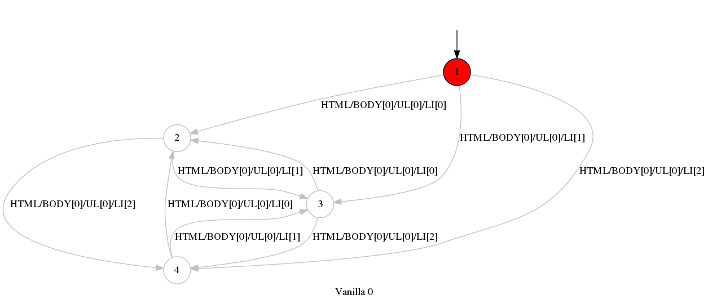

A web site with a single page, and three list items and one paragraph. Clicking on each of the three items changes the contents of the paragraph on-the-fly using jQuery. Any crawler that does not take into account Javascript and the DOM contents will fail to visit all states. A proper exploration with the VanillaWsm yields the following graph:
